koinot
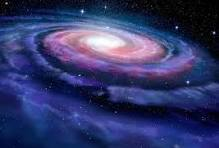
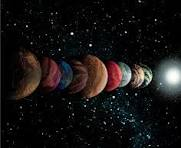

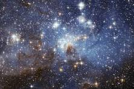
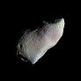
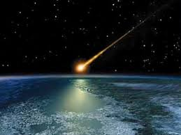
| t/r | sayyora nomlari | ular haqida ma'lumot | rasmlari |
| 1 | Merkuriy | quyoshga yaqin eng issiq sayyora | |
| 2 | Venera | Venera – ichki sayyora va Yer osmonida Quyoshdan 48° dan uzoqroq uzoqlashmaydi. Venera – yorqinligi boʻyicha osmondagi uchinchi jism | 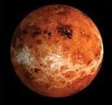 |
| 3 | yer | biz yashaydigan sayyora | 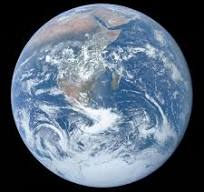 |
| 4 | mars | Mars — Quyoshdan uzoqligi bo'yicha to'rtinchi va kichikligi jihatidan Merkuriy ciertasidan keyingi ikkinchi kichik Yer guruhiga kiruvchi sayyora | 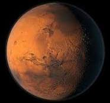 |
| 5 | yupiter | Yupiter yoki Mushtariy (arab.) — Quyosh tizimining Quyoshdan uzoqligi boʻyicha beshinchi va kattaligi jihatdan birinchi oʻrindagi sayyorasidir. | 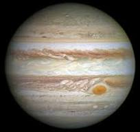 |
6 | saturn | Saturn — Quyoshdan uzoqligi bo'yicha 6-sayyora bo'lib, Quyosh sistemasidagi kattaligi bo'yicha ikkinchi o'rinda turuvchi gaz gigantidir | 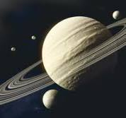 |
| 7 | uran | Urandagi bir yil Yerdagi 84 yilga to'g'ri keladi. Uran eng sovuq sayyora hisoblanib, bu yerda havo harorati -224 darajaga teng. | 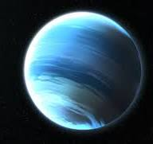 |
| 8 | neptun | Neptun -Quyosh tizimidagi Quyoshdan uzoqligi boʻyicha 8-sayyora. u eng sovuq sayyora hisoblanadi | 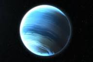 |
yanada ko'proq ma'lumot uchun